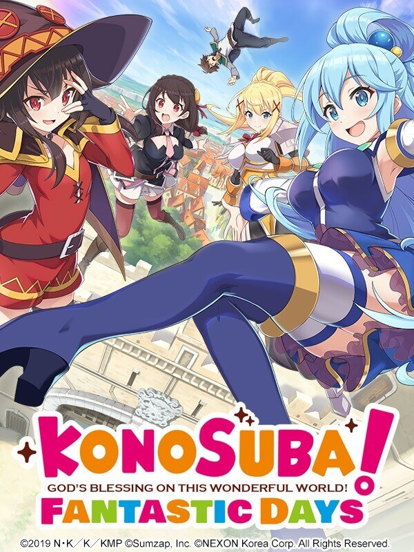
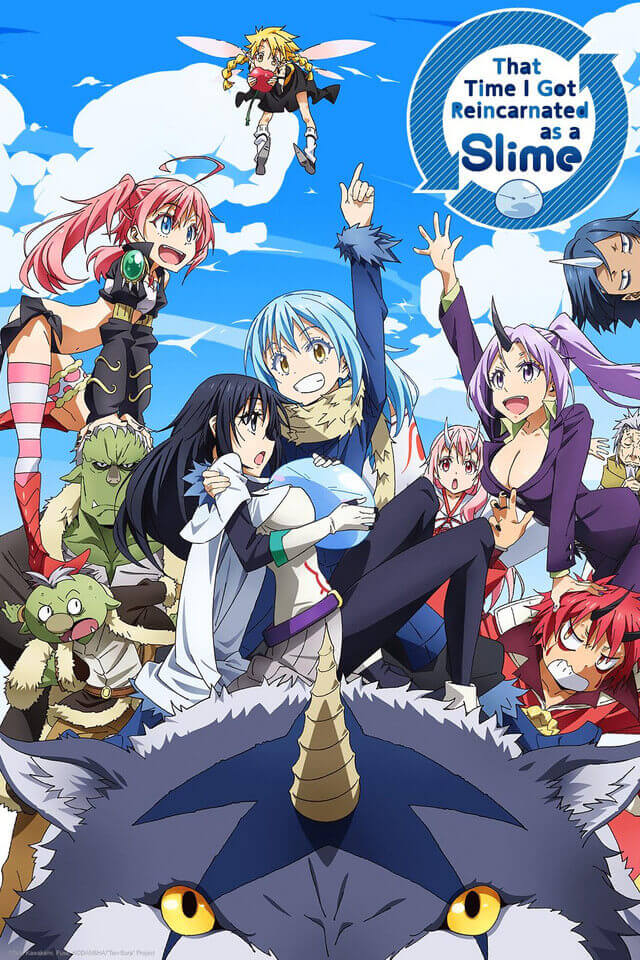
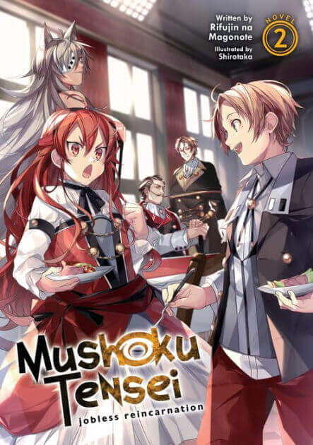

Picture taken by @Marvic Dan
What is Isekai?
The protagonist is transported to another world by journeying into it or being summoned into it is "transition into another world narratives". While the protagonist of a traditional isekai work is usually a "chosen hero," there have been many variations on the theme. -thetealmango [2022-03-25]
Konosuba
Picture taken by @Konosuba: Fantastic days
Following an untimely and embarrassing death, Kazuma Satō, a Japanese teenage shut-in NEET, meets a goddess named Aqua, who offers to reincarnate him in a parallel world with MMORPG elements, where he can go on adventures and battle monsters. Despite being offered a superpowered item or ability to use in this new world, Kazuma, following some provocation, chooses Aqua herself to accompany him to the town of Axel, quickly finding her absent-mindedness to be less than beneficial.LN 1.P With Aqua unable to return to the afterlife until the Devil King is defeated, the two form a party and recruit two other members; an explosion-obsessed magician named Megumin and a masochistic crusader named Darkness.LN 1.2.4 Due to the party's dysfunctional abilities, Kazuma quickly gives up on the idea of defeating the Devil King and tries to live a comfortable lifestyle, only to find the circumstances of his daily life are forcing him and his party to encounter and battle the Devil King's generals. (wikipedia 2022)
That time i got reincarnated as a slime
Picture taken by @IMDB
Satoru Mikami is an ordinary 37-year-old corporate worker living in Tokyo. He is almost content with his monotonous life, despite the fact that he doesn't have a girlfriend. During a casual encounter with his colleague, an assailant pops out of nowhere and stabs him. While succumbing to his injuries, a mysterious voice echoes in his mind and recites a series of commands which he could not make sense of. After regaining consciousness, Satoru discovers that he has been reincarnated as a Slime in an unfamiliar world. At the same time, he also acquires new-found skills, particularly the ability called "Predator," which allows him to devour anything and mimic its appearance and skills. He stumbles upon Veldora, a powerful 'Storm Dragon', who has been sealed for the last 300 years for reducing a town to ashes. Feeling sorry for him, Satoru befriends the dragon, promising to help him in destroying the seal. They decide to exchange names, Veldora bestows upon him name Rimuru, and receives name Tempest in return. Slime then consumes the dragon together with his prison in order to analyze the spell inside itself and eventually free Veldora. The disappearance of Veldora's aura creates a power vacuum which eventually makes Rimuru the leader of all beings inhabitating the Great Forest of Jura, who accept him as a ruler and together they found the nation of Tempest. With Rimuru's strength, wisdom and idealistic vision the new nation quickly grows in strength and influence. Soon Rimuru and his subjects draw the attention of the nearby foreign powers, from monarchs and legendary heroes to demon lords, some seeking to become their allies, while others intending to take advantage of or destroy them completely. (wikipedia 2022)
Mushoku Tensei
Picture taken by @Rakuten Kobo
An unnamed 34-year-old Japanese NEET is evicted from his home after failing to attend his parents' funeral. After some self-reflection, he concludes that his life is ultimately pointless. Still, he intercepts a speeding truck heading towards a group of teenagers in an attempt to do something noteworthy for the first time in his life. He pulls one of them out of harm's way just before he dies. He awakens in the body of a baby and discovers he has been reincarnated in a world of sword and sorcery. He resolves to succeed in his new life, abandoning his previous identity in place of Rudeus Greyrat. Rudeus develops a strong affinity for magic due to his aptitude and early training. He becomes a student of demon magician Roxy Migurdia during his youth, a friend of demihuman Sylphiette, and a teacher of magic to noble heiress Eris Boreas Greyrat. The story chronicles his new life's highlights as he attempts to overcome the failures of his previous one. (wikipedia 2022)
sources:
TheTealMango (2021) What is Isekai? Everything Explained for Beginners https://www.thetealmango.com/featured/isekai-meaning/ [2022-03-23]
Wikipedia (2022) KonoSuba (Premise) https://en.wikipedia.org/wiki/KonoSuba [2022-03-23]
Wikipedia (2022) That Time I Got Reincarnated as a Slime (plot) https://en.wikipedia.org/wiki/That_Time_I_Got_Reincarnated_as_a_Slime [2022-03-23]
Wikipedia (2022) Mushoku Tensei (plot) https://en.wikipedia.org/wiki/Mushoku_Tensei [2022-03-23]
audio-sources:
YouTube (2018) Konosuba: God's Blessing on this Wonderful World! OP (60fps) https://www.youtube.com/watch?v=sJZvGUC5a5g [2022-03-23]
YouTube (2019) Tensei shitara Slime Datta Ke - Opening[1] https://www.youtube.com/watch?v=GhGTc6p8sg0 [2022-03-23]
YouTube (2021) Mushoku Tensei : Jobless Reincarnation Opening 1 |『Tabibito no Uta』 https://www.youtube.com/watch?v=gweLSR-Esjs [2022-03-23]